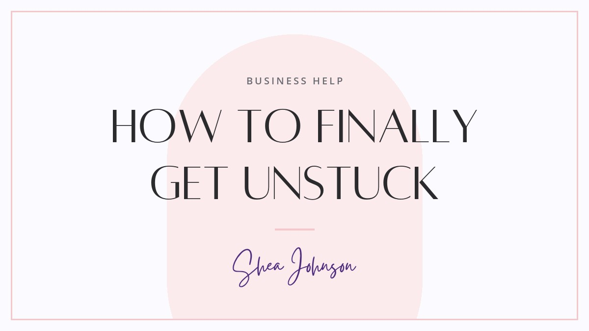

Throughout this article, I’ll share with you the power of starting to get that momentum going, the pointers I use in my own life to get unstuck, and advice that will help you turn your ideas into action steps.
We’ll cover planning without overthinking, limiting beliefs, consistency, and some resources to make things more practical.
Why I wrote this…
I’ve worked for about 30 companies in my life so far; that number could be larger now.
I’ve had much success over the years due to “never giving up.” I successfully organized two nonprofits, coached others in their business endeavors, and then finally launched Shea Johnson LLC.
My other truth is…
I still struggle with things holding me back in life, like imposter syndrome and another big hurdle of mine… analysis paralysis.
I go down this huge rabbit hole of research, gathering tons and tons of information that have never-ending connections, just to end up never taking action.
So, to help you avoid making the same mistakes I did, let’s jump right in.
Planning without “overthinking”
Are you “The Perfectionist”?
Sometimes, when we are perfectionists, we aim to start from the top when we really need to start from where we are and be honest with ourselves about what that looks like. Try not to get distracted by what you see from others… your journey is different, and your time is coming as long as you stay consistent and don’t give up.
For example, we might spend months on logo creation when the logo, in fact, has very little to do with more important parts of our businesses, like customer acquisition, visibility, and our bottom line. I’m not saying don’t have fun with your passion; I’m saying… recognize when it’s time to get it done and move on to the next step of your process.
So get away from the idea of “Is it perfect?” and replace that with:
“Does this get the job done?”
“Is this valuable?”
“Is it good enough?”
And
“Done is better than perfect.”
You can refine and perfect things later on. Right now, just start so you can practice and get better at things as you go along.
You cannot learn from experience you are not gaining.
“The Researcher”
This is me… and to all my fellow researchers… I have a saying.
“There is strategy in everything…” and that is true… but you do want to catch yourself when you feel yourself going down a rabbit hole of research.
You DO want to do some research. It’s good when assessing risks, start-up costs, and legal and liability stuff for your business. But you probably don’t need to learn everything about what you are doing when getting started.
Try to stick to what’s practical and what you can use right out of the gate.
Ask yourself,
“Is this a need to know or nice to know?”
“Is this what I need to know right now, and will this help move me forward?”
Don’t try to solve every problem right out of the gate. Remember, your time is money, and you need to make a return on the time you invest.
Limiting beliefs
Do you have a hard time believing, or tend to let your assumptions hold you back?
Sometimes, we say things to ourselves like, “I’m not pretty enough,” “I’m not smart enough,” “not qualified enough,” or “I don’t have enough time.”
A lot of times, these limiting beliefs keep us from chasing after our dreams, robbing us for years.
Instead of “I cannot,” always ask yourself, “How can I?” Research helps me a lot with this.
Again, not too much research… but just enough…
Also, be careful who you share your ideas with; everyone is not a motivational coach. Pay attention to those people and the kinds of things they say to you, and if they are “Negative Nancys,” you might have to improve your support circle.
I’ve got a few golden people who never shoot me down, no matter how many times I come back with another idea. Make sure the people you call when you get that momentum are a safe place for you, that they use words of encouragement, believe in you, support you, and cheer you on.
And one last thing before I move on to consistency…
Be grateful for your “yeses” and your “nos.” When you receive a “yes,” be graceful and do not take it for granted. Don’t waste it. And remember, they are not promised nor guaranteed.
When you receive a “no,” also be graceful and use the opportunity to “figure it out,” become resilient, and develop strength… skills you will need anyway when you get where you’re going and keep facing challenges that force you to grow, as your roles change, and when it comes to decision making.
Sometimes, we believe we need something or someone in order to do something. With the world we live in today… automation, free tools, and shifts in mindset and habits are changing that narrative.
Consistency
“It’s not happening fast enough…
I thought I would’ve made money by now…
It’s not meant to be…
I need money now.”
Do you say these things?
I won’t say you should’ve started back then… but you definitely don’t want to be saying those words in the future.
No matter how much planning we do… sometimes things still take longer than we expected.
Even though I knew what some of my problems were, it still wasn’t an overnight fix. It took a lot of personal development, outside help, and constant self-reflection.
So I say to you, picture what you are trying to do in your mind.
Ask yourself,
“Am I in this for the long haul?” and “What does this look like as a long-term game for me?”
When it comes to things like “instant gratification” or “getting rich quick,” these two tend to set us back even further. You might find yourself starting one business so you can fund the other business, and making tons of other mistakes that come from trying to fast-track your way to success.
We have to be careful when something sounds too good to be true, because most of the time, it is. This is why you always want to ask questions, do your research and due diligence, avoid making decisions when you are being pressured, watch out for tactics like bait and switch, fact-check, and make sure there is always professionalism and transparency when signing things, doing private deals, and working with people you’ve just met.
Take your time (reasonably, of course) when making any decision, especially before you spend money. A lot of advertisers, salespeople, and marketing experts will try to guilt you and play on your emotions to get you to buy… watch out for hard selling. If the business is legit, it will still be there later when you come back to buy.
And if you miss this month’s promotion, don’t worry; businesses that have been around, and will still be around, put out promotions all the time.
What’s important in these moments is that you do a self-check for being impulsive.
Ask yourself things like “Is this a need to have or nice to have?” when it comes to your business budget.
Now that you are about to be doing business, you need to study consumerism… so you can switch over from being a buyer to becoming a seller.
Practical steps for getting unstuck
Now that I’ve covered what can help you get unstuck up there (your brain), here’s what I’ve discovered out there to help you take action and see “tangible” progress.
SMART goals
Make sure your goals are realistic for you. Be realistic when working things in or around your schedule.
Don’t be discouraged because it might take you longer than expected to complete your goals. The deadline doesn’t matter when your goals are most likely your dreams.
One of the things I love to say is…
“It’s never too late; it’s only late if it’s never.”
Try doing one thing a day for your business, and if you don’t have time for that, try one thing a week.
Learn how to set S.M.A.R.T. goals for yourself so that you can actually and successfully complete them.
And audit your expectations and plans; check to see if you are setting the bar too high… or… too low.
Professional services
Sometimes we need professional services, like a therapist.
Therapy has helped me with my self-esteem, my confidence, and some of the things I mentioned earlier on.
I’m someone who has a lot of value to offer, but because at times I still don’t feel good enough to deliver it, I never put myself out there; therefore, no one ever finds out about me.
But hopefully, soon, that will transform into a story about triumph.
Mentorship
I found a nonprofit called SCORE.org. They offer free one-on-one business mentorship with experts. I have a mentor, and I’m very happy with the way they do things.
Mentorship helps because when you make appointments with another human being, you tend to show up, which helps with accountability.
SCORE also hosts live webinars that I always end up loving and being super glad I went to, and if I ever miss one, I still enjoy watching the recordings.
The recordings add just as much value, if you ask me.
Free tools
I also recommend saving money early on as much as you can until you make money.
You want to start from profit, not from debt.
Bonus tip
I believe I had an advantage with a skill I’ve gotten better at over the years: being organized!
When you’re organized, you don’t have to work hard to search for things because you already know where they are, and moving forward, no matter what it is, you don’t have to rearrange things… only add to them.
Once I organized one area of my life, I began to organize everything.
Start with putting things back where they go.
Then, organize the areas of your life that will ease your stress and anxiety.
I would make a list of those areas from “most important” to “least important.”
Organize those areas first.
Then, organize the rest later.
For the sake of getting organized in your business, I created a template that helps business owners keep their business information in one place, from general business details to all their important links. You can find it in my shop.
So remember…
That by simply “starting,” you’ve already taken the most crucial step toward building momentum.
If you enjoyed reading this, visit mssheajohnson.com and subscribe so you never miss what I’m creating next.